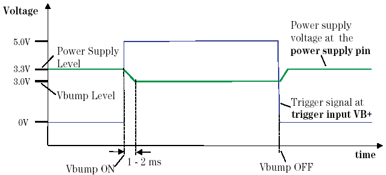

To set the power supply voltage levels
If the display does not already show the DPS Setup data, click DPS Pins in the Select pulldown menu of the Level Setup window.
For each pin listed in the column dps pin:
- In the column level [V] (see How to read the DPS Setup window), type in the
voltage level to be applied to the pin. The level that you set is rounded off to the next value
programmable by the hardware. The rounded off value is displayed after exiting the entry
field.
In this column, you can change the level. The polarity of each power supply pin is set in the Pin Configuration window. The voltage supplied to the device will be + or - depending on whether the voltage has been inverted or not. However, for the types of DPS of the test system, only DPS+ is allowed.
CAUTION Take care when using polarized decoupling capacitors that you do not reverse their polarity. - In the column current [A], type in the current limit value (the
maximum current that the DPS can source or sink). The value you enter is an absolute value, and
may not be negative.
The set current will be rounded off to the next value programmable by the hardware, according to the specified resolution. The rounded off value will be displayed after exiting the entry field.
- In the column off cur., select the current limit of the DPS pin while
the test system is in the disconnect state. You can select the following
specifiers from the fill menu:
min
Sets the DPS current limit to the minimum value (10 µA).
act
Sets the current limit to the same as the DPS is operating. This is used for the test such as continuity test or rapid discharge of any decoupling capacitors on the DUT power pins.
open
For DC Scale DPS cards, the pin is disconnected by switching off the output relay. For the other DPS-slot types, this sets the DPS current limit to the minimum value (10 µA).
- In the column Tsetup [ms], specify the wait time from when the
connect sequence is performed until the DPS starts to force
voltage.
You can use this to set relative delays between the DPS channels, such as when you test devices with multiple power pins and when the order and the relative times of applying power to these pins is important.
The DUT supply pins are connected and activated in the same order as defined in the pin configuration setup. The DPS then powers up the supply to the supply pins including this wait time before each DPS is connected.
When the test system switches from the connect state to the disconnect state, first the DUT supply pins are disconnected in inverse order as defined in the pin configuration setup, then the I/O channel relays and DPS channels switch off at about the same time.
- In the column marked V Bump, use the menu to set the VBump voltage
on or off. This column consists of the sub
columns, state, level [V] and level
low[V].
To use the Vbump function, select on in the fill menu of the state sub column and set the voltage to be switched after receiving the Vbump trigger to the level sub column. To disable the Vbump function, select off in the fill menu of the state sub column.
The figure below shows the timing restrictions when applying Vbump.
